Dra Shara Borges — cirurgiã-dentista · CRO-MG 65822 · especialista em harmonização orofacial.
Av. Nossa Sra. Aparecida, 1154, sala 3 — Planalto
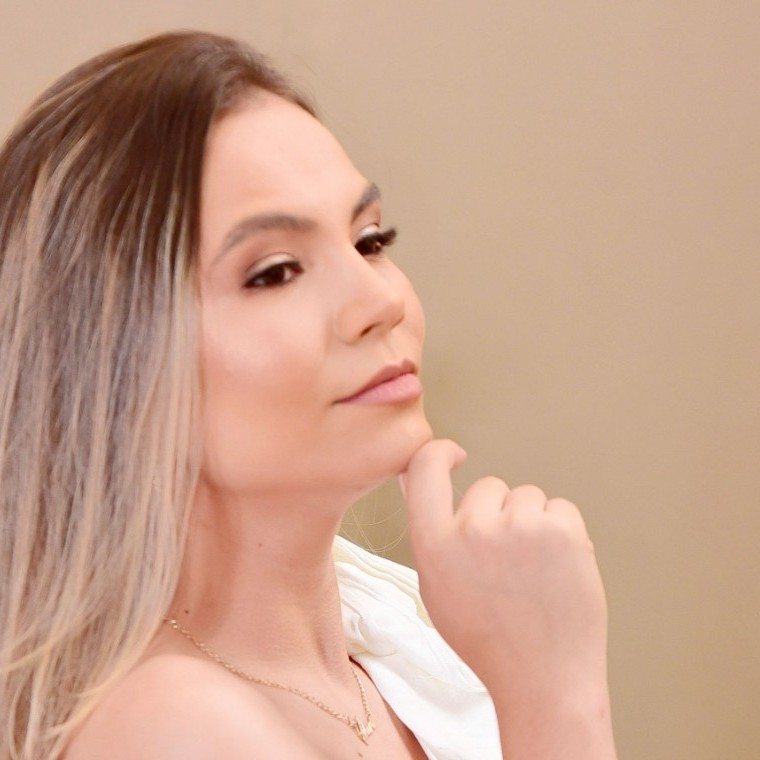
Diferenciais
Atuação dentro das normas do Conselho Federal de Odontologia, com segurança em cada procedimento.
Escuta atenta e explicação clara em cada etapa, do diagnóstico ao resultado final.
Consultório de fácil acesso no Planalto, atendendo a cidade e região.
Estética facial
Procedimentos minimamente invasivos para realçar sua beleza natural, com resultado equilibrado e seguro.
Suaviza linhas de expressão em testa, glabela e região dos olhos.
Saiba maisVolume, contorno e hidratação dos lábios, com equilíbrio e naturalidade.
Saiba maisContorno e sustentação em regiões como malar, mandíbula, queixo e sulcos.
Saiba maisTransformações reais
Cada procedimento é feito sob medida, respeitando os traços naturais de cada paciente.
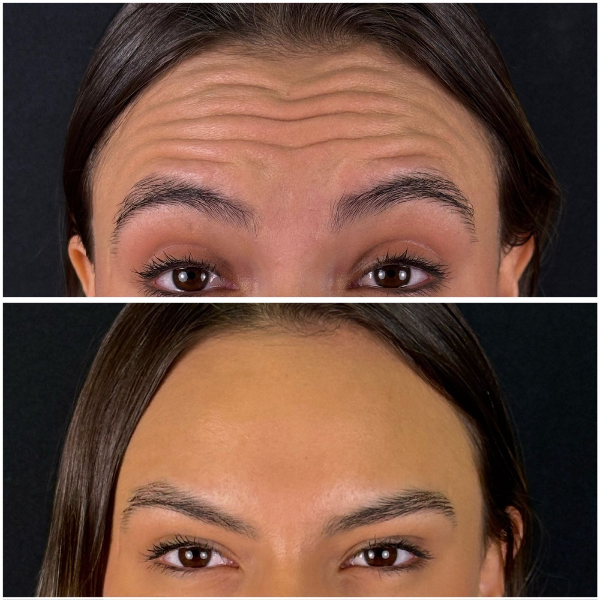
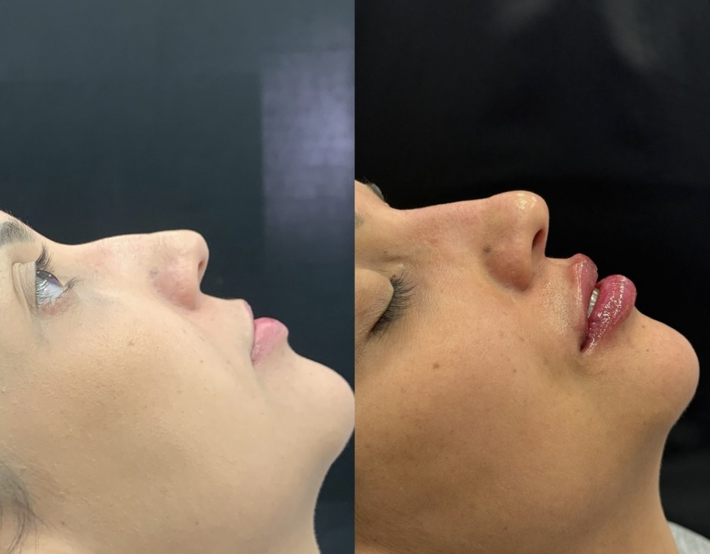
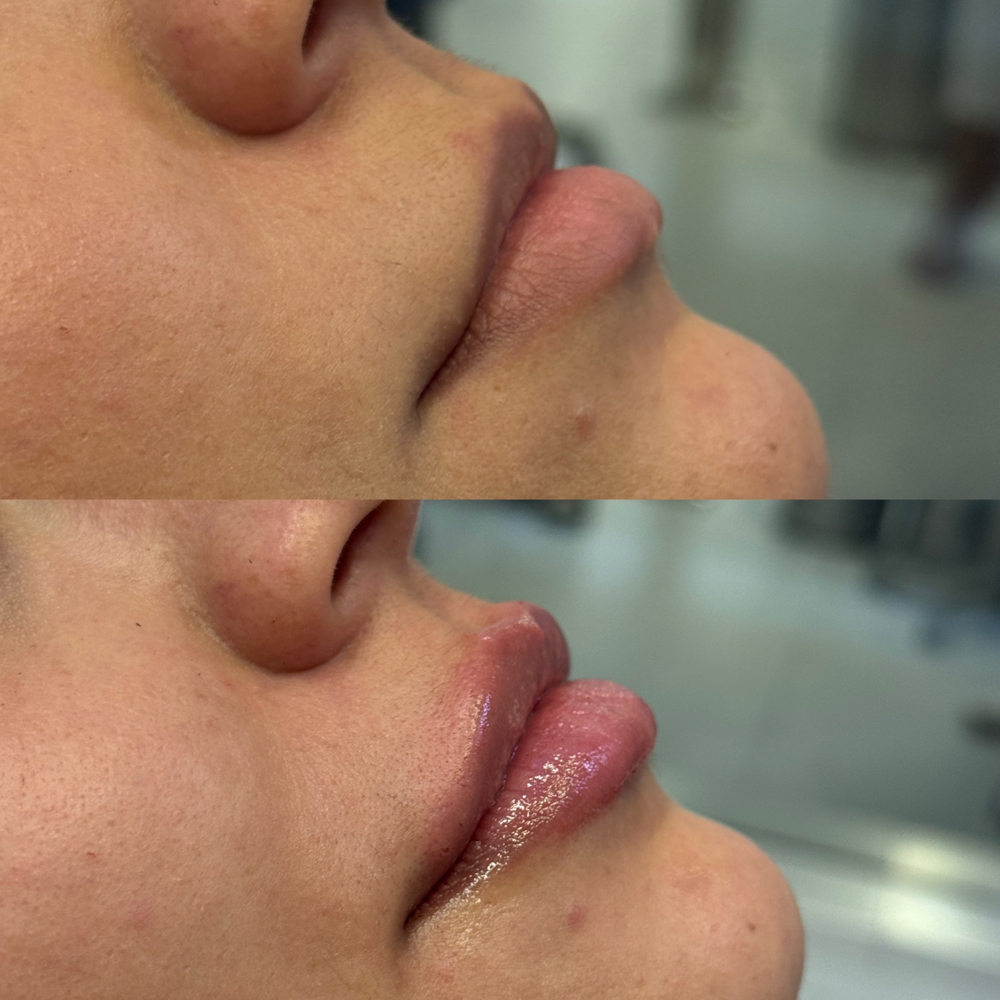
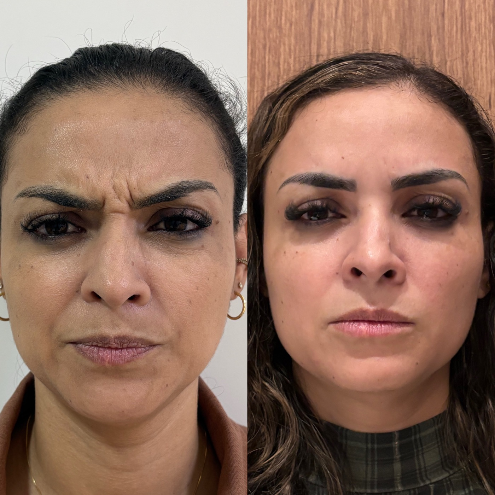
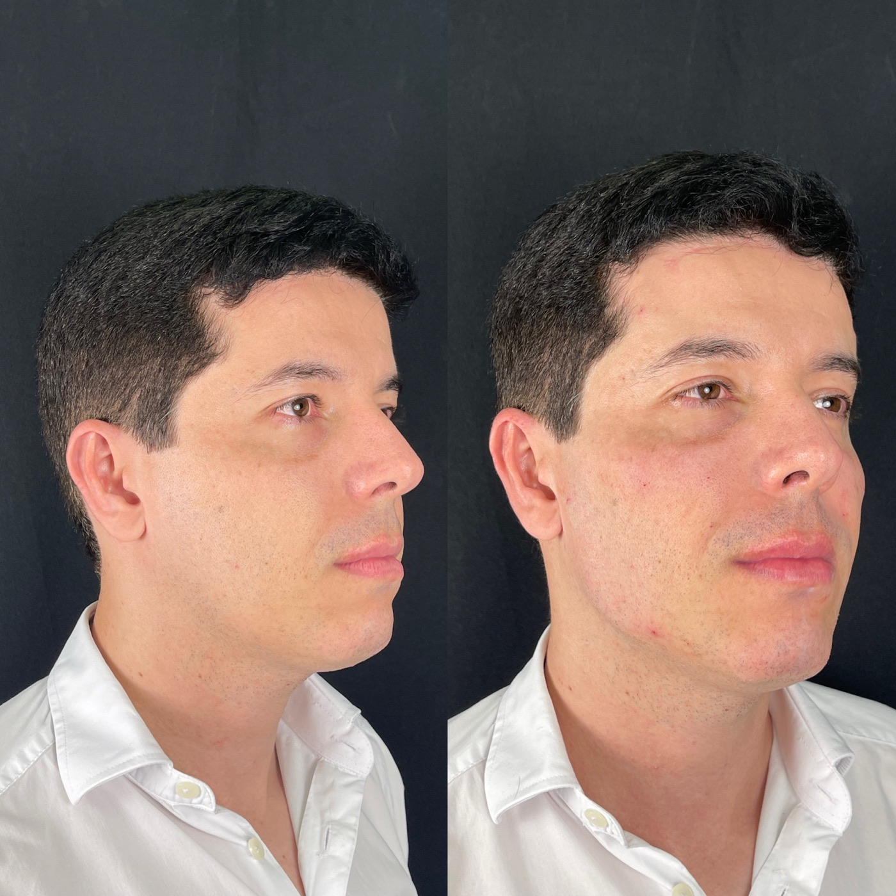
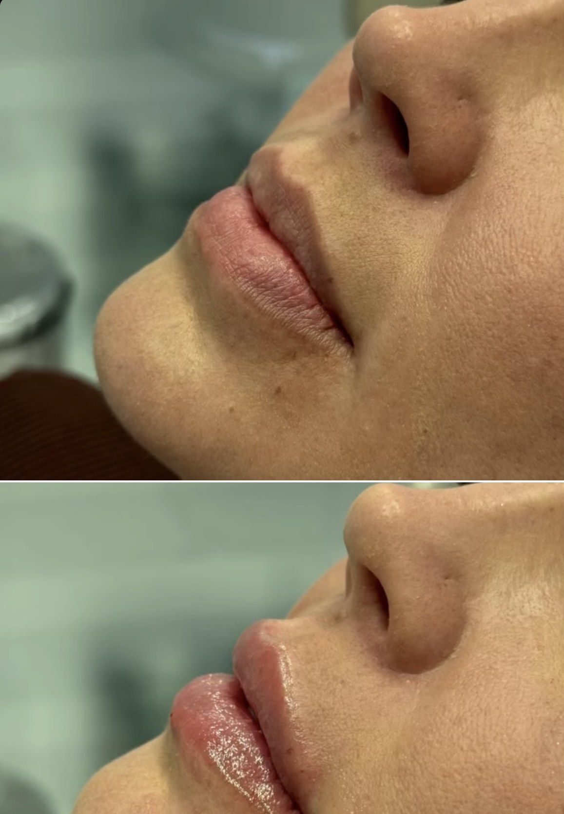
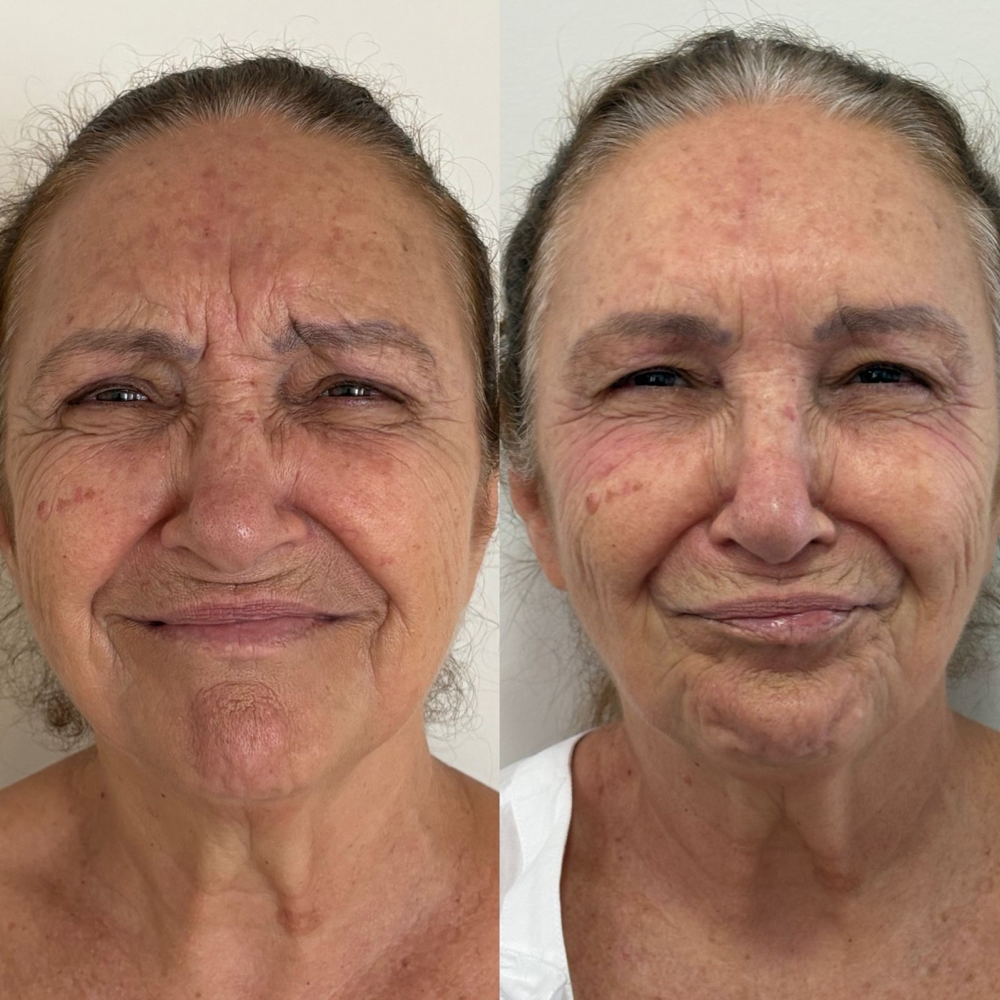
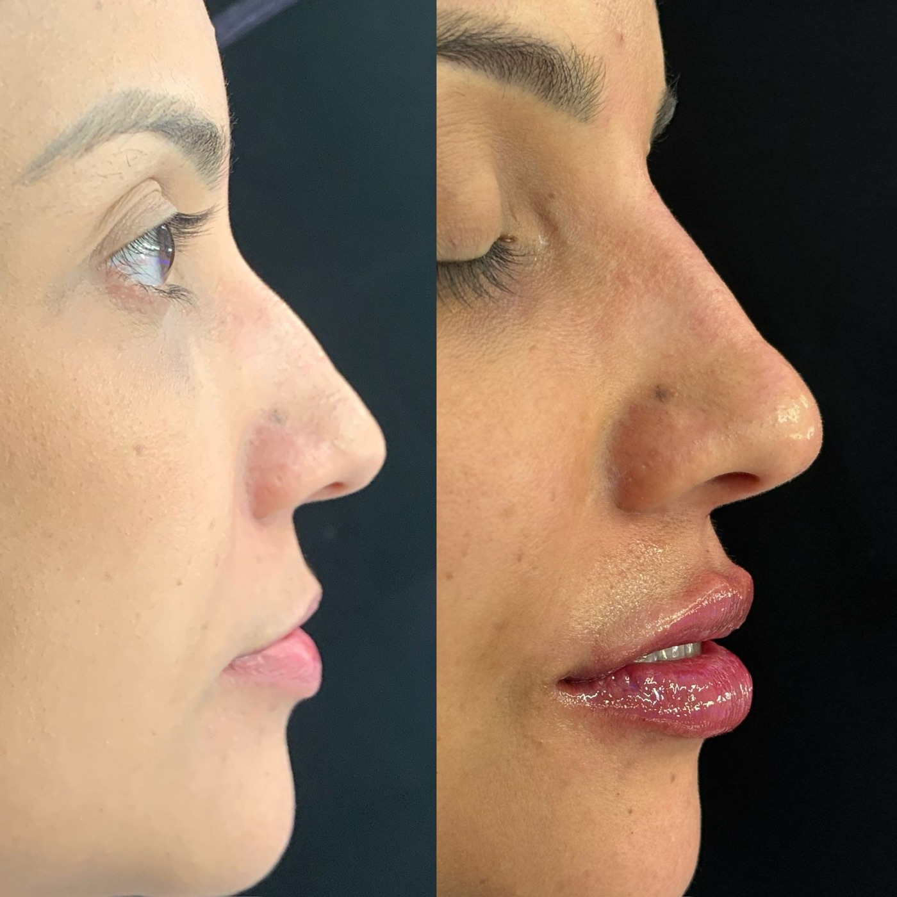
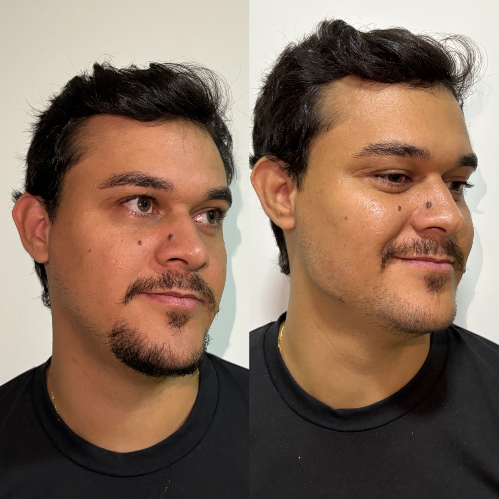
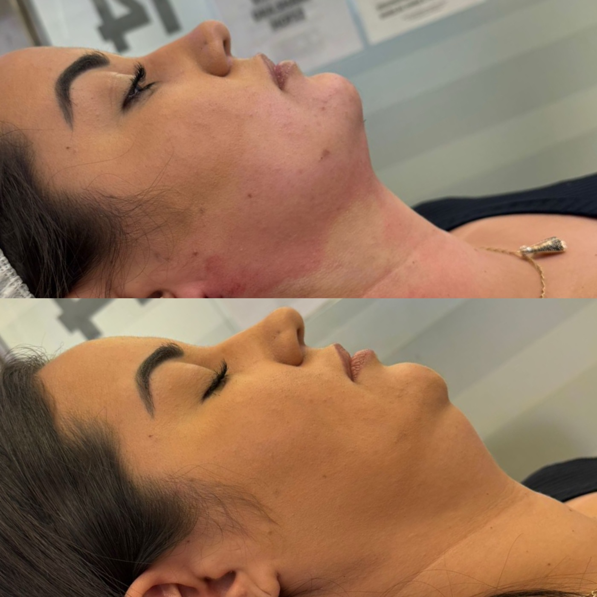
Imagens publicadas mediante Termo de Consentimento (TCLE). Resultados variam de pessoa para pessoa.
Avaliações de pacientes
“Fiz meu preenchimento labial com a Dra Shara e eu amei demais o resultado. Tinha muito medo de ficar exagerado mas ela me passou tanta confiança e ficou exatamente do jeitinho que eu queria. Eu amei!!!”
“Recomendo de olhos fechados! A Dra Shara me atendeu muito bem, muito atenciosa aos detalhes e resolveu minha queixa. Podem ir nela sem medo!!!”
Saúde bucal
Cuidado completo com sua saúde bucal, para toda a família.
Reposição de dentes ausentes com próteses parciais ou totais removíveis.
Saiba maisQuem cuida de você
CRO-MG 65822
Cirurgiã-Dentista
Especialista em Harmonização Orofacial
Odontologia geral · Harmonização orofacial
Sou Shara Borges, cirurgiã-dentista especialista em harmonização orofacial, com consultório em Brasilândia de Minas - MG. Uno odontologia geral e harmonização para cuidar da sua saúde bucal e da sua autoestima, com técnica, ética e acolhimento.
Cada atendimento começa por uma avaliação individual: escuto o que você deseja, analiso o seu caso e indico o que faz sentido para você, com foco na naturalidade e na sua segurança em cada etapa.
A primeira conversa é uma avaliação: entender o que você deseja e indicar o que faz sentido para o seu rosto.
Agendar minha avaliaçãoDúvidas frequentes
É uma avaliação individual: conversamos sobre suas queixas e objetivos, analisamos o rosto e a saúde bucal e indicamos as opções adequadas ao seu caso.
Sim. A Dra Shara atua nas duas frentes, o que permite pensar o sorriso e o rosto de forma integrada.
O objetivo é sempre respeitar seus traços. O plano é individualizado e os resultados variam de pessoa para pessoa.
Pelo WhatsApp (38) 99805-9065. Atendemos na Av. Nossa Sra. Aparecida, 1154, sala 3, Planalto, Brasilândia de Minas - MG.
Onde estamos
Av. Nossa Sra. Aparecida, 1154, sala 3
Planalto, Brasilândia de Minas — MG
Atendimento com hora marcada. Confirme o melhor horário pelo WhatsApp.
Sua avaliação ajuda outras pessoas a encontrar um atendimento de confiança em Brasilândia de Minas.
Avaliar no GoogleAgende agora
Fale direto com a Dra Shara e agende sua avaliação.
Falar no WhatsApp